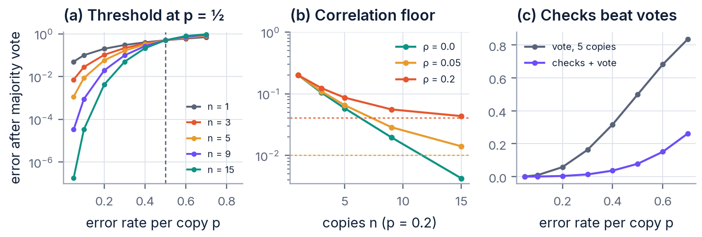
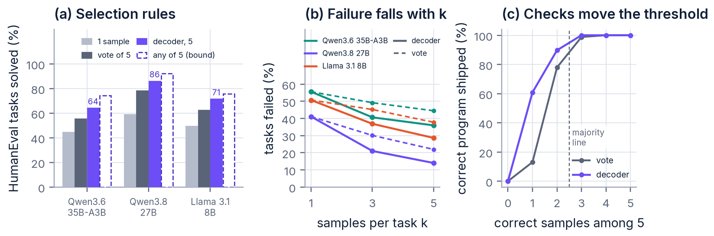
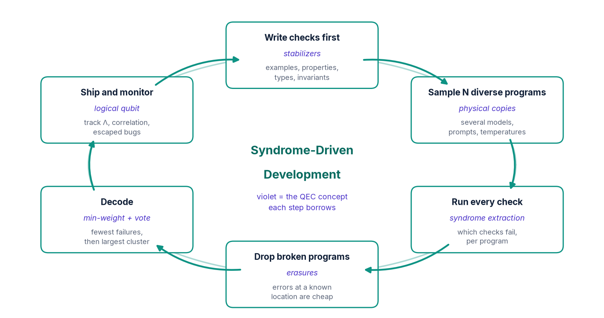

ในบทความนี้
- คำถามคือควรส่งมอบโปรแกรมตัวไหน
- Voting ขยายพฤติกรรมที่มีเสียงมากกว่า
- โค้ด: bug ของ median ที่เกิดซ้ำชนะ plain vote
- Checks เพิ่มข้อมูล และ checks ก็ผิดได้
- อ่านผลศึกษาโมเดลในหนังสือพร้อม protocol
- จากการทดลองสู่ pipeline ที่ปฏิเสธได้
- ลบ check ที่สำคัญแล้วทำนายความล้มเหลว
- Run & check — รันตัวอย่างด้วยตัวเอง
- Sources & scope — แหล่งอ้างอิงและขอบเขต
In this post
- The question is which program to ship
- Voting amplifies the dominant behaviour
- Code: a shared median bug wins the plain vote
- Checks add information, and checks can be wrong
- Read the book’s model study with its protocol
- From experiment to a pipeline that can refuse
- Remove the decisive check and predict the failure
- Run and check the example
- Sources and scope
คำถามคือควรส่งมอบโปรแกรมตัวไหน
ดาวน์โหลดหนังสือและโค้ดประกอบ
ดาวน์โหลด Below Threshold ฉบับเต็ม (PDF ภาษาอังกฤษ · 104 หน้า · 5.4 MB)
อ่านบน Google Drive · ดาวน์โหลดตัวอย่าง Python ทั้งสิบบท (ZIP)
บทที่ 9/10 · บทเรียนดัดแปลงจาก Below Threshold: AI, Quantum Errors and Better Code ฉบับ 1.0 บทที่ 9 หน้า 61–77
พื้นฐานที่ใช้คือ Python functions, tests และแนวคิด syndrome จากบท 3 เป้าหมายคือแยก “มี candidate ที่ถูกอยู่ใน pool” ออกจาก “เลือก candidate ที่ถูกได้อย่างเชื่อถือได้” ทั้งสองเป็นความสำเร็จเชิงวิศวกรรมคนละเรื่อง การสร้างห้าคำตอบแล้วเลือกตัวที่อธิบายมั่นใจที่สุดยังไม่ได้แก้ปัญหาข้อที่สอง
บท 9 เสนอ Syndrome-Driven Development หรือ SDD โดยมอง candidate program เป็น noisy copy การ crash หรือ load ไม่สำเร็จเป็น erasure เวกเตอร์ของ checks ที่ไม่ผ่านเป็น syndrome และ decoder ใช้ข้อมูลเหล่านี้เลือก candidate ส่วน bug ที่หลุดไปในโปรแกรมที่ส่งมอบเป็น logical error นี่เป็น analogy สำหรับจัดระบบความคิด ไม่ใช่ข้ออ้างว่าโปรแกรมมีพฤติกรรมเป็น quantum state จริง
แนวทางนี้ต่อยอดจาก redundant software, ระบบ sample-and-filter และ property-based tests หนังสือเสนอการรวมแนวคิดด้วยกรอบ error correction โดยไม่อ้างสิทธิ์ความใหม่เหนือเทคนิคเดิม คุณค่าทางปฏิบัติคือทำ assumptions เรื่อง independence, คุณภาพหลักฐาน และวิธี selection ให้ชัดเจน
Voting ขยายพฤติกรรมที่มีเสียงมากกว่า


เมื่อมี copies จำนวนคี่ n ตัวที่อิสระ แต่ละตัวผิดด้วย probability p การ vote แบบสองคำตอบในโมเดลที่ระวังไว้ก่อนล้มเหลวด้วย binomial tail เหนือ n/2 เมื่อ p ต่ำกว่า 1/2 การเพิ่ม copies ช่วยได้ แต่เมื่อสูงกว่า 1/2 vote จะเลือกคำตอบผิดมากขึ้น ที่ p = 0.1 โมเดล exact ในหนังสือลด error เหลือประมาณ 0.86% เมื่อมีห้า copies นี่เป็นการคำนวณในโมเดล ไม่ใช่คำรับรองสำหรับ LLM samples
assumption ที่เปราะบางคือ independence หลายโปรแกรมอาจใช้ off-by-one rule เดียวกันเพราะ specification ชวนให้ตีความเช่นนั้น ใน common-mode mixture ของหนังสือ มีโอกาส ρ ที่ทุก copy ทำตาม shared draw เดียวกัน จึงเกิด failure floor ที่ ρp ไม่ว่าจะเพิ่ม sample count เท่าไร การเพิ่ม drafts ที่แทบเหมือนกันไม่เติมข้อมูลที่ขาด
ข้อสรุปเรื่อง threshold สมมติว่า copies ที่ผิดเห็นตรงกันและ copies ที่ถูกเห็นตรงกัน โปรแกรมที่ผิดจริงอาจให้คนละคำตอบ plurality จึงอาจสำเร็จแม้ candidates ที่ถูกมีไม่ถึงครึ่ง pipeline จึงต้องวัด behaviour, check coverage และ correlations บนงานของตน แทนการใช้ binomial formula เพียงตัวเดียวตัดสินทุกอย่าง
โค้ด: bug ของ median ที่เกิดซ้ำชนะ plain vote
teaching model นี้ใช้ functions ที่เขียนไว้ให้อ่าน ไม่ได้รัน source ที่ดาวน์โหลดหรือสร้างใหม่ A, B และ C มี bug เดียวกันคือคืน upper-middle สำหรับ list ความยาวคู่ ส่วน D กับ E คำนวณ median ถูกต้อง F ใช้ None แทน erasure ที่ทราบตำแหน่ง examples ที่มองเห็นสองข้อกำหนด syndrome และ probe inputs อีกชุดกำหนด behavioural clusters
"""Toy SDD with handwritten functions; no generated source is executed."""
from collections import Counter
from statistics import median
def upper(xs):
return sorted(xs)[len(xs) // 2]
def correct(xs):
ys = sorted(xs)
m = len(ys) // 2
return ys[m] if len(ys) % 2 else (ys[m - 1] + ys[m]) / 2
candidates = {"A": upper, "B": upper, "C": upper,
"D": correct, "E": correct, "F": None}
visible = [([3, 1, 2], 2), ([4, 1, 3, 2], 2.5)]
probes = [[9], [1, 2], [2, 8, 4], [7, 1, 9, 3]]
live = [n for n, f in candidates.items() if f is not None]
syndrome = {n: tuple(int(candidates[n](x) != y) for x, y in visible)
for n in live}
signature = {n: tuple(candidates[n](x) for x in probes) for n in live}
def vote(names):
if not names:
return None
counts = Counter(signature[n] for n in names)
return max(names, key=lambda n: counts[signature[n]])
def checked_vote(names):
survivors = [n for n in names if not any(syndrome[n])]
return vote(survivors) if survivors else None
plain = vote(live)
decoded = checked_vote(live)
for n in candidates:
print(n, "erasure" if candidates[n] is None else "syndrome=" + str(syndrome[n]))
print(f"plain vote={plain or 'ESCALATE'}; checked vote={decoded or 'ESCALATE'}")
# This held-out oracle scores choices only after selection.
held_out = [[-10, 4, 6, 1000, 10, 20], [-2, 4], [1, 1, 7]]
for name in (plain, decoded):
if name is None:
print("ESCALATE: no candidate to score")
continue
score = sum(candidates[name](x) == median(x) for x in held_out)
print(f"{name}: held-out {score}/{len(held_out)}")
assert decoded is None or not any(syndrome[decoded])
assert checked_vote([n for n in live if any(syndrome[n])]) is None
assert vote([]) is None and checked_vote([]) is None
assert correct(held_out[0]) == 8 and upper(held_out[0]) == 10A syndrome=(0, 1)
B syndrome=(0, 1)
C syndrome=(0, 1)
D syndrome=(0, 0)
E syndrome=(0, 0)
F erasure
plain vote=A; checked vote=D
A: held-out 1/3
D: held-out 3/3plain vote เลือก A เพราะมีสาม copies ที่ทำงานเหมือนกัน example ความยาวคู่ให้ syndrome (0, 1) กับ candidates ที่ผิดทั้งสาม เมื่อกรองเฉพาะ all-clear syndrome จะเหลือ D และ E จึงเลือก D held-out examples สามข้อถูกใช้หลังทั้งสอง selections เสร็จแล้วเท่านั้น โดยให้ A ได้ 1/3 และ D ได้ 3/3
evaluation สาม cases แสดงกลไก ไม่ใช่ค่าประมาณ reliability ตัวอย่าง median ฉบับเต็มในหนังสือมีสี่ checks และ hidden cases 1,000 ชุด โค้ดที่นี่ตั้งใจไม่ใช้ exec หรือ external models เพื่อให้ตรวจ selection logic ได้โดยไม่ต้องสร้าง execution sandbox
Checks เพิ่มข้อมูล และ checks ก็ผิดได้
check มีประโยชน์ต่อ fault ที่เปลี่ยนพฤติกรรมซึ่งมันสังเกตเท่านั้น ข้อกำหนดว่า “median อยู่ระหว่างค่าต่ำสุดกับสูงสุด” จับ upper-middle bug ไม่ได้ การกลับลำดับ input ก็จับไม่ได้ แต่ example ความยาวคู่จับได้ จึงควรเพิ่ม targeted examples ควบคู่กับ properties และตรวจ expected answers ด้วย reference ที่เชื่อถือได้
Property-based testing เป็นวิธีที่มีมาก่อนสำหรับเปลี่ยน specification ให้เป็น checks จำนวนมาก ส่วน mutation testing ถามว่า checks เหล่านั้นจับ faults ที่ตั้งใจใส่เข้าไปได้หรือไม่ ทั้งสองไม่ได้พิสูจน์โปรแกรมทั่วไปว่าถูกต้อง แต่ช่วยเปิดเผย suite ที่ทดสอบเฉพาะ happy paths
tests ที่ผิดเป็น faulty measurements หนังสือพบ examples ที่ขัดกับคำตอบอ้างอิงสี่ข้อใน HumanEval checks ที่สกัดมา example median ของ [-10, 4, 6, 1000, 10, 20] ควรได้ 8.0 ไม่ใช่ 15.0 หาก tests และ implementation เกิดจากการตีความผิดแบบเดียวกัน suite ที่เขียวอาจตอกย้ำ error จึงควร review contract และ expected values อย่างอิสระก่อน optimize selector
อ่านผลศึกษาโมเดลในหนังสือพร้อม protocol


Lab 8 บันทึกผล local models สามตัวบน HumanEval 164 tasks แต่ละ task มีห้า samples รวม 2,460 โปรแกรม syndrome selector แก้ tasks ได้ 64.0%, 86.0% และ 71.3% สำหรับ model configurations ทั้งสาม เทียบกับ 55.5%, 78.0% และ 62.2% ของ behavioural voting ตัวเลขเป็น stored results ในหนังสือ ไม่ใช่ benchmark run ใหม่สำหรับ tutorial นี้ และไม่ใช่การจัดอันดับโมเดลปัจจุบัน
oracle แบบ “มี sample ที่ผ่านอย่างน้อยหนึ่งในห้า” เป็น upper bound ของ selection ไม่ใช่กฎที่ใช้ deploy ได้ hidden expected outputs ต้องใช้ให้คะแนน selectors โดยไม่เลือกผู้ชนะ ในการศึกษาของหนังสือ behavioural grouping มองเห็น test inputs ของ benchmark แต่ไม่เห็น expected outputs workflow จริงต้องสร้าง probes แยกเอง เช่นใน toy example นี้
ข้อจำกัดอื่นคือใช้ raw completion prompts, sampling configuration เดียว, benchmark เดียวที่มี functions สั้น และ visible checks ที่ใช้ได้เพียง 341 ข้อใน 123 tasks งานที่ไม่มี checks ใช้ voting แทน ใน candidates ที่มี all-clear syndrome ยังมี 9.4% ที่ไม่ผ่าน hidden tests syndrome ที่ผ่านจึงเป็นหลักฐาน ไม่ใช่ proof
จากการทดลองสู่ pipeline ที่ปฏิเสธได้


เริ่มจากเขียนและตรวจ checks สร้าง candidates ภายใน budget จากนั้นใช้ isolated execution environment สกัด check results และ behavioural signatures ตัด candidates ที่ load ไม่ได้, crash หรือ timeout ใน candidates ที่ผ่าน acceptance checks ให้ใช้ tie-breaker ที่ประกาศไว้ เช่น behavioural agreement พร้อมเก็บหลักฐานที่ใช้ตัดสิน
กฎสำหรับ deploy ควร escalate เมื่อไม่มีใครผ่าน benchmark selector ของหนังสือบางครั้งส่ง candidate ที่แย่น้อยที่สุดเพื่อให้ทุกกรณีมีคะแนน แต่มีเพียงสามจาก 53 model-task cases ลักษณะนี้ที่ผ่าน hidden tests กฎเชิงทดลองนี้มีประโยชน์ต่อ analysis แต่ไม่เหมาะเป็น default สำหรับส่งมอบ toy example จึงคืน ESCALATE ชัดเจนเมื่อ survivor set ว่าง
โปรแกรมที่สร้างขึ้นต้องมี sandbox จริงพร้อม resource limits และ restricted access การแยก Python function หรือ subprocess เพียงอย่างเดียวไม่ใช่ security boundary ควรติดตาม generation cost, execution cost, rejection rate, defects ที่หลุด และ failure ที่หนึ่ง สาม และห้า samples หากกราฟเริ่มราบ ให้ปรับ checks หรือ candidates ก่อนจ่ายเพิ่มเพื่อ samples ที่แทบเหมือนเดิม
ลบ check ที่สำคัญแล้วทำนายความล้มเหลว
ลบ visible example ความยาวคู่แล้วรันใหม่ live candidates ทุกตัวจะผ่าน check ที่เหลือ และ behavioural voting จะกลับไปเลือก shared bug คืน example นั้น แล้วแทน correct candidates ทุกตัวด้วย upper checked selection ต้อง escalate การเปลี่ยนสองแบบนี้เปิดเผยว่า implementation ใช้หลักฐานจริงหรือเพียงคืนชื่อที่เราชอบอยู่แล้ว
เพิ่ม properties สองข้อที่ review แล้ว พร้อม hidden cases อีกชุด เก็บ expected hidden outputs ไว้นอก selection ระบุ policy สำหรับ invalid หรือ empty inputs เพราะ correctness ของ median ขึ้นกับ contract นี้ด้วย invariant ที่ต้องรักษาคือ candidate ที่ไม่ผ่าน required acceptance check ต้องไม่ถูกส่งมอบอัตโนมัติ ไม่ว่าจะมี candidates อื่นที่ทำงานเหมือนมันมากเท่าไร
Run & check — รันตัวอย่างด้วยตัวเอง
ตัวอย่างสำหรับสอนนี้ใช้ Python standard library เท่านั้น บันทึก ch09.py แล้วรันด้วย Python 3.10 ขึ้นไป โดย assertions ตรวจ invariant ที่อธิบายในบท
python3 ch09.pyตัวอย่างทั้งสิบบทและผลลัพธ์ที่คาดหวัง (ZIP) · อ่าน source บน GitHub
Sources & scope — แหล่งอ้างอิงและขอบเขต
เอกสารและหลักฐาน
โครงบท ภาพที่ให้เครดิต และผล lab ที่รายงานมาจากหนังสือของผู้เขียน ณ November 2026 ตัวอย่างสั้นที่ใช้ standard library รันเพื่อตรวจบทเรียนเว็บวันที่ 25 November 2026 เป็นแบบจำลองเพื่อสอน ไม่ได้รันซ้ำการทดลอง Stim, neural network, mitigation หรือ LLM ฉบับเต็มในหนังสือ ข้ออ้าง hardware, simulator, preprint และบริษัทคงขอบเขตตามที่ระบุ
- Anirach Mingkhwan. Below Threshold: AI, Quantum Errors and Better Code. Edition 1.0 (November 2026), Chapter 9, pp. 61–77.
- Chen et al. Evaluating Large Language Models Trained on Code (2021, preprint).
- HumanEval: official benchmark and execution guidance.
- Claessen & Hughes. QuickCheck: a lightweight tool for random testing of Haskell programs (2000).
- Knight & Leveson. An experimental evaluation of the assumption of independence in multiversion programming (1986).
The question is which program to ship
Download the book and examples
Download the complete Below Threshold book (English PDF · 104 pages · 5.4 MB)
Read on Google Drive · Download all ten Python examples (ZIP)
Chapter 9/10. A tutorial adaptation of Below Threshold: AI, Quantum Errors and Better Code, Edition 1.0, Chapter 9, pp. 61–77.
Prerequisites: Python functions, tests and Chapter 3’s idea of a syndrome. The goal is to distinguish having a correct candidate somewhere in a sample pool from reliably selecting that candidate. Those are different engineering achievements. Generating five answers and choosing the most confident one leaves the second problem unsolved.
Chapter 9 proposes Syndrome-Driven Development (SDD). A candidate program is a noisy copy. A crash or load failure is an erasure. A vector of failed checks is its syndrome. A decoder uses these observations to select a candidate; an escaped bug in the shipped program is a logical error. This is an organizing analogy, not a claim that a program literally behaves as a quantum state.
The approach builds on redundant software, sample-and-filter systems and property-based tests. The book presents the combined error-correction framing as its proposal, without claiming priority over those established techniques. Its practical contribution is to make assumptions about independence, evidence quality and selection explicit.
Voting amplifies the dominant behaviour
For an odd number n of independent copies, each wrong with probability p, a pessimistic two-outcome vote fails with the binomial tail above n/2. Below p = 1/2, adding copies helps; above it, voting increasingly selects the wrong answer. At p = 0.1, the book’s exact model reduces error to about 0.86% with five copies. This is a model calculation, not a guarantee for LLM samples.
Independence is the fragile assumption. Several programs can share the same off-by-one rule because the input specification encourages it. In the book’s common-mode mixture, with probability ρ all copies repeat one shared draw, giving a failure floor of ρp regardless of sample count. Adding more nearly identical drafts cannot supply missing information.
The threshold statement assumes all wrong copies agree and correct copies agree. Real wrong programs may disagree, so a plurality can sometimes succeed with fewer than half the candidates correct. That is why your pipeline must measure behaviour, check coverage and correlations on its own tasks rather than substitute a single binomial formula for evaluation.
Code: a shared median bug wins the plain vote
This safe teaching model uses handwritten functions, not downloaded or generated source. A, B and C share an upper-middle bug on even-length lists; D and E calculate the median correctly. F is represented by None to model a known erasure. Two visible examples define the syndrome, and independent probe inputs define behavioural clusters.
"""Toy SDD with handwritten functions; no generated source is executed."""
from collections import Counter
from statistics import median
def upper(xs):
return sorted(xs)[len(xs) // 2]
def correct(xs):
ys = sorted(xs)
m = len(ys) // 2
return ys[m] if len(ys) % 2 else (ys[m - 1] + ys[m]) / 2
candidates = {"A": upper, "B": upper, "C": upper,
"D": correct, "E": correct, "F": None}
visible = [([3, 1, 2], 2), ([4, 1, 3, 2], 2.5)]
probes = [[9], [1, 2], [2, 8, 4], [7, 1, 9, 3]]
live = [n for n, f in candidates.items() if f is not None]
syndrome = {n: tuple(int(candidates[n](x) != y) for x, y in visible)
for n in live}
signature = {n: tuple(candidates[n](x) for x in probes) for n in live}
def vote(names):
if not names:
return None
counts = Counter(signature[n] for n in names)
return max(names, key=lambda n: counts[signature[n]])
def checked_vote(names):
survivors = [n for n in names if not any(syndrome[n])]
return vote(survivors) if survivors else None
plain = vote(live)
decoded = checked_vote(live)
for n in candidates:
print(n, "erasure" if candidates[n] is None else "syndrome=" + str(syndrome[n]))
print(f"plain vote={plain or 'ESCALATE'}; checked vote={decoded or 'ESCALATE'}")
# This held-out oracle scores choices only after selection.
held_out = [[-10, 4, 6, 1000, 10, 20], [-2, 4], [1, 1, 7]]
for name in (plain, decoded):
if name is None:
print("ESCALATE: no candidate to score")
continue
score = sum(candidates[name](x) == median(x) for x in held_out)
print(f"{name}: held-out {score}/{len(held_out)}")
assert decoded is None or not any(syndrome[decoded])
assert checked_vote([n for n in live if any(syndrome[n])]) is None
assert vote([]) is None and checked_vote([]) is None
assert correct(held_out[0]) == 8 and upper(held_out[0]) == 10A syndrome=(0, 1)
B syndrome=(0, 1)
C syndrome=(0, 1)
D syndrome=(0, 0)
E syndrome=(0, 0)
F erasure
plain vote=A; checked vote=D
A: held-out 1/3
D: held-out 3/3The plain vote selects A because three copies share its behaviour. The even-length example produces syndrome (0, 1) for all three wrong candidates. Filtering for an all-clear syndrome leaves D and E, so the checked vote selects D. The three held-out examples are consulted only after both selections; they score A at 1/3 and D at 3/3.
Those three evaluation cases illustrate the mechanism; they are not a reliability estimate. The book’s larger median example has four checks and 1,000 hidden cases. Here the code deliberately avoids exec and external models so you can inspect the selection logic without an execution sandbox.
Checks add information, and checks can be wrong
A check is useful only against faults that change the behaviour it observes. “The median lies between the minimum and maximum” does not catch the upper-middle bug. Reversing the input does not catch it either. The even-length example does. Add targeted examples alongside properties and verify their expected answers with a trusted reference.
Property-based testing is an established way to turn specifications into many checks. Mutation testing asks whether those checks catch deliberately introduced faults. Neither technique proves a general program correct, but both help expose a suite that only tests happy paths.
Incorrect tests are faulty measurements. The book found four contradictory examples among the HumanEval checks it extracted. Its median example should give 8.0 for [-10, 4, 6, 1000, 10, 20], rather than 15.0. If tests and implementation come from the same mistaken interpretation, a green suite can reinforce the error. Independently review the contract and expected values before optimizing the selector.
Read the book’s model study with its protocol
Lab 8 records three local models solving 164 HumanEval tasks with five samples each: 2,460 programs in total. The syndrome selector solved 64.0%, 86.0% and 71.3% of tasks for the three model configurations, compared with 55.5%, 78.0% and 62.2% for behavioural voting. These are the book’s stored results, not a new benchmark run for this tutorial or a ranking of current models.
The oracle “any of five samples passes” is an upper bound on selection, not an available deployment rule. Hidden expected outputs score the selectors and must never choose the winner. In the book’s study, behavioural grouping did see the benchmark’s test inputs, though not their expected outputs. A real workflow needs independently generated probes, as this toy example does.
Other limits matter: raw completion prompts, one sampling configuration, one benchmark of short functions, and only 341 usable visible checks across 123 tasks. On tasks without checks the selector fell back to voting. Among all-clear candidates, 9.4% still failed hidden tests. A passing syndrome is evidence, not proof.
From experiment to a pipeline that can refuse
Write and validate checks first. Generate candidates within a budget. In an isolated execution environment, extract check results and behavioural signatures; discard candidates that fail to load, crash or time out. Among candidates passing the acceptance checks, use a declared tie-breaker such as behavioural agreement. Retain the evidence used for that choice.
The deployment rule should escalate when nobody passes. The book’s benchmark selector sometimes shipped the least-bad candidate to make every case scoreable; only three of 53 such model-task cases passed hidden tests. That experimental rule is useful for analysis, but it is a poor default for shipping. The toy example explicitly returns ESCALATE when the survivor set is empty.
Generated programs require an actual sandbox with resource limits and restricted access; a separate Python function or subprocess alone is not a security boundary. Track generation cost, execution cost, rejection rate, escaped defects and how failure changes at one, three and five samples. If the curve flattens, improve checks or candidates before buying more nearly identical samples.
Remove the decisive check and predict the failure
Delete the even-length visible example and rerun. All live candidates now pass the remaining check, so behavioural voting again favours the shared bug. Restore the example, then replace every correct candidate with upper. The checked selection must escalate. These changes reveal whether your implementation truly uses evidence or merely returns a preferred name.
Add two reviewed properties and a separate set of hidden cases. Keep expected hidden outputs outside selection. State a policy for invalid or empty inputs, since median correctness depends on that contract too. The invariant to preserve is simple: a candidate that fails a required acceptance check cannot be shipped automatically, however many other candidates share its behaviour.
Run and check the example
This complete teaching example uses only the Python standard library. Save ch09.py, then run it with Python 3.10 or later. Its assertions check the stated invariants.
python3 ch09.pyAll ten examples and expected output (ZIP) · Browse example source on GitHub
Sources and scope
Reading and evidence
The author’s book is the source of the chapter structure, credited diagrams and reported lab results (November 2026 snapshot). The short standard-library example above was executed for this web lesson on 25 November 2026. It is a teaching model; the book’s full Stim, neural-network, mitigation and LLM experiments were not rerun for these posts. Hardware, simulator, preprint and company claims retain their stated scope.
- Anirach Mingkhwan. Below Threshold: AI, Quantum Errors and Better Code. Edition 1.0 (November 2026), Chapter 9, pp. 61–77.
- Chen et al. Evaluating Large Language Models Trained on Code (2021, preprint).
- HumanEval: official benchmark and execution guidance.
- Claessen & Hughes. QuickCheck: a lightweight tool for random testing of Haskell programs (2000).
- Knight & Leveson. An experimental evaluation of the assumption of independence in multiversion programming (1986).